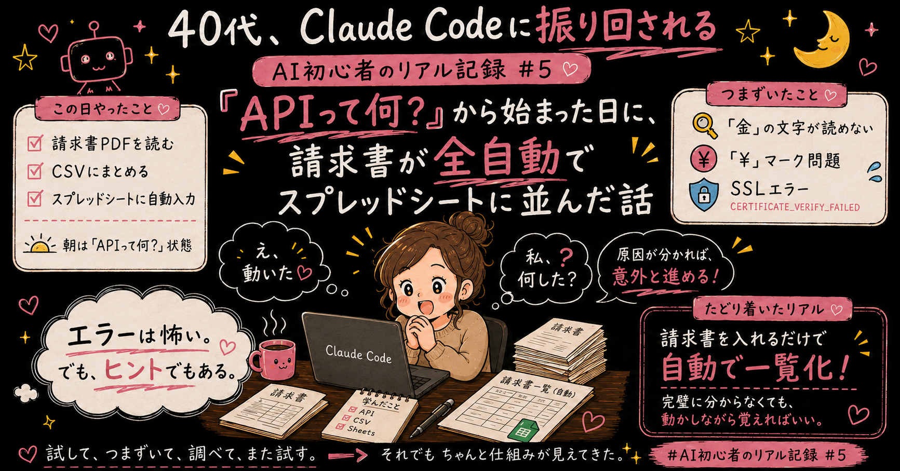

my work, my style.
オンライン秘書 × AI活用サポート
15年の接客・店舗運営で培った「人に寄り添う力」と、
AIツールを使いこなす「業務効率化の力」で、
あなたのお仕事を誠実にサポートします。
はじめまして、荒木めぐみと申します。
約15年にわたり、菓子販売の現場で「接客・店舗運営・エリアマネジメント」まで
幅広い業務に携わっており、現在も販売の仕事を続けながら在宅ワークに取り組んでいます。
現在はオンライン秘書・事務サポートとして活動しながら、 ChatGPTやClaude CodeといったAIツールの活用スキルを磨いています。 「現場で培った対応力」と「AIによる効率化」の両方をお届けできるのが私の強みです。
オンライン秘書としての実務の中で、日々の繰り返し業務をClaude Code(AIエージェント)で仕組み化しています。 「作っただけ」ではなく、実際に継続して運用しているものを中心にご紹介します。
月あたり約3時間40分〜5時間40分の作業時間削減
※直近の実績値です。案件数・内容により変動します(参考:削減率 約90%)
請求書PDFの内容確認・項目転記・案件照合・不明点の洗い出しを、AIによるPDF読取・仕訳一覧化の仕組みに置き換え。要確認項目のみ人が最終確認する運用にしています。月あたり約30件を処理。
PDF読取 / 経理サポート / 月間約30件処理
月あたり約8〜12時間の制作時間削減(月8本運用)
※画像作成の準備工程まで含めた所要時間です
日々の学習メモから、下書き生成・レビュー・画像作成準備までを仕組み化。月8本のペースで継続発信しています。
ライティング支援 / コンテンツ制作 / 月8本運用
カレンダーのスクショや日時指定から、LINE・ChatWork向けの打ち合わせ案内文を自動生成。1件あたり5分以内で完成します。効果としては小さな業務ですが、日常的に発生する定型作業をゼロから作らず済む形にした事例です。
Claude Code スキル開発 / 画像読取 / 日次運用
完成したnote記事をもとに、Threads向けの要約投稿・構成案を自動生成。1つのコンテンツをゼロから作り直さず、別媒体・別形式へ展開する仕組みとして運用しています。月4本のペースで発信中。
コンテンツ再活用 / 月4本運用
その他、日常業務で使っている自動化
文章の内容をAIに読み込ませて画像を生成したり、ウェビナーでAIアート・AI漫画の技術を学んだりと、用途に合わせてテイストを描き分けています。

漫画やLINEスタンプ、SNS発信に欠かせない「同じキャラクターの表情違い」も、一貫性を保って生成できます。
シフト制の仕事と両立しながら在宅ワークに取り組んでいます。
・勤務がある日:1日3時間ほど
・勤務がない日:6時間前後
※スケジュールは柔軟に調整可能です。お気軽にご相談ください。
クラウドワークス経由の方、それ以外の方、どちらからでもお気軽にご連絡ください。
誠実に、前向きに、お仕事に取り組ませていただきます。どうぞよろしくお願いいたします!